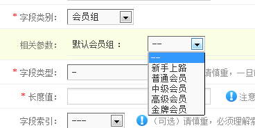
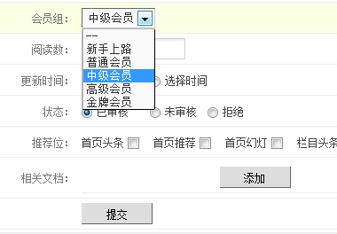

自定义字段的相关函数一般放在/extensions/custom.php文件中，因为是自定义的，此文件不影响升级，大家都懂
一、函数介绍
1、字段类别函数：_formtype()，格式array('字段英文名字'=>'字段提示名称')
2、字段配置函数：form_字段英文名字($setting=null)
3、表单输出函数：content_字段英文名字($name, $content=null, $field=null)
二、举例说明
1、建立一个文本框字段（名称为test）
①、字段类别函数
function _formtype() {
return array(
'test' => '测试', //前者test表示字段的英文名称，后者表示字段的描述名称
);
}
②、字段配置函数
function form_test($setting=null) {
$size = isset($setting['size']) ? $setting['size'] : 150; //如果不填写长度，默认为150
$default = isset($setting['default']) ? $setting['default'] : ''; //默认值，都能看懂
return '
<table width="98%" cellspacing="1" cellpadding="2">
<tbody>
<tr>
<td width="100">文本框长度 ：</td>
<td><input type="text" class="input-text" size="10" value="' . $size . '" name="setting[size]"><font color="gray">px</font></td>
</tr>
<tr>
<td>默认值 ：</td>
<td><input type="text" class="input-text" size="30" value="' . $default . '" name="setting[default]"></td>
</tr>
</tbody>
</table>';
}
③、表单输出函数
function content_test($name, $content=null, $field=null) {
$setting = isset($field['setting']) ? string2array($field['setting']) : $field; //配置
$required = isset($field['not_null']) && $field['not_null'] ? ' required' : ''; //必填字段
//$errortips = isset($field['errortips']) && $field['errortips'] ? ' placeholder="' . $field['errortips'] . '"' : ''; //错误提示
$pattern = isset($field['pattern']) && $field['pattern'] ? ' pattern="' . $field['pattern'] . '"' : ''; //正则判断
$content = is_null($content[0]) ? get_content_value($setting['default']) : $content[0]; //字段内容，固定值
return '<input type="text" value="' . $content . '" class="input-text" name="data[' . $name . ']" width=' . $setting['size']. '>'; //表单Name值格式为data[字段名称]
}
2、建立一个读取会员组表中的数据（名字为membergroup）
①、字段类别函数
function _formtype() {
return array(
'test' => '测试', //前者test表示字段的英文名称，后者表示字段的描述名称
'membergroup' => '会员组', //前者membergroup表示字段的英文名称，后者表示字段的描述名称
);
}
②、字段配置函数
function form_membergroup($setting=null) {
$default = isset($setting['default']) ? $setting['default'] : ''; //默认值，都能看懂
//调用会员组表中的数据
$model = Controller::model('member_group');//实例化会员组模型
$data = $model->getAll(1);//获取会员组表中的全部数据，用于设置默认值
$select = '<select name="setting[default]"><option> -- </option>';
foreach ($data as $t) {
$selected = $default == $t['id'] ? 'selected' : '';
$select .= '<option value="' . $t['id'] . '" ' . $selected . '> ' . $t['name'] . ' </option>';
}
$select .= '</select>';
return '
<table width="98%" cellspacing="1" cellpadding="2">
<tbody>
<tr>
<td width="100">默认会员组 ：</td>
<td>' . $select . '</td>
</tr>
</tbody>
</table>';
}
③、表单输出函数
function content_membergroup($name, $content=null, $field=null) {
$setting = isset($field['setting']) ? string2array($field['setting']) : $field; //配置
$required = isset($field['not_null']) && $field['not_null'] ? ' required' : ''; //必填字段
//$errortips = isset($field['errortips']) && $field['errortips'] ? ' placeholder="' . $field['errortips'] . '"' : ''; //错误提示
$pattern = isset($field['pattern']) && $field['pattern'] ? ' pattern="' . $field['pattern'] . '"' : ''; //正则判断
$content = is_null($content[0]) ? get_content_value($setting['default']) : $content[0]; //字段内容，固定值
//调用会员组表中的数据
$model = Controller::model('member_group');//实例化会员组模型
$data = $model->getAll(1);//获取会员组表中的全部数据，用于设置默认值
$select = '<select name="data[' . $name . ']"><option> -- </option>';//表单Name值格式为data[字段名称]
foreach ($data as $t) {
$selected = $content == $t['id'] ? 'selected' : '';
$select .= '<option value="' . $t['id'] . '" ' . $selected . '> ' . $t['name'] . ' </option>';
}
$select .= '</select>';
return $select;
}
④、效果预览
添加字段时：

发布内容时：

就像示例2，自定义字段类别支持表数据显示，当然也能自动将数据插入表单，完全支持自定义，只要你想要FineCMS就能帮你实现